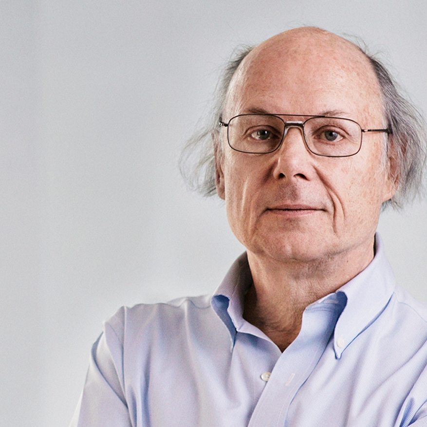

Биография

Бьёрн Страуструп, Бьярне Строуструп (дат. Bjarne Stroustrup произношение род. 11 июня 1950 (по другим сведениям, 30 декабря), Орхус, Дания) — автор языка программирования C++. Окончил Орхусский университет (Дания, 1975) по математике и информатике, защитил диссертацию (Ph. D.) по информатике в Кембридже (1979). До 2002 возглавлял отдел исследований в области крупномасштабного программирования в компании AT&T (Computer Science Research Center of Bell Telephone Laboratories). Ныне профессор Техасского университета, А&М. Бьёрн родился и вырос в городе Орхус («Aarhus»), втором по величине городом в Дании. Он поступил в государственный университет на отделение компьютерных наук. Закончив его, он получил степень магистра. Бьёрн Страуструп получил степень доктора философии, когда работал над конструированием распределённой системы в Компьютерной Лаборатории Кэмбриджского Университета (Англия). Он член колледжа имени Черчилля, где он и его жена Марьян («Marian») провели несколько чудесных и занятых лет, где у них родилась дочь Аннемария. В 1979 году Страуструп, вместе со своей женой и дочерью, переехал в Нью-Джерси, чтобы пойти работать в Компьютерный Научно-Исследовательский Центр Bell Telephone Laboratories. В этом же году у него родился сын, Николас («Nicholas»). Бьёрн был главой отдела Исследования Программирования, со времени его создания в AT&T до 2002 года, когда он соединился с отделением Научных Исследований Техасского университета A&M.